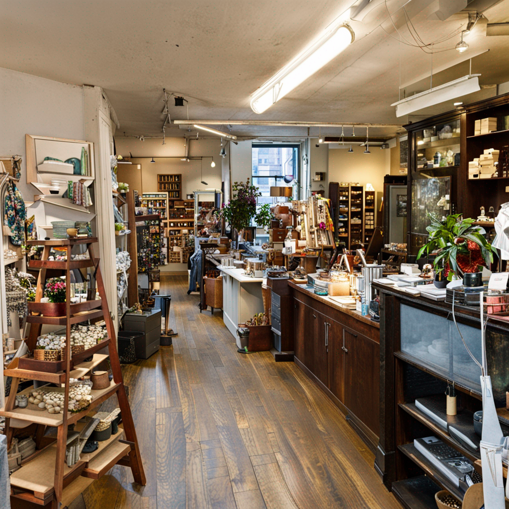

Ithaca, New York, is a hidden gem nestled in the heart of the Finger Lakes region. This picturesque city has gained a reputation as a popular tourist destination, thanks to its natural beauty and abundance of attractions. From stunning gorges and waterfalls to cultural and historical sites, Ithaca offers a diverse range of activities that cater to various interests and preferences.
II. Natural Wonders
Blessed with an awe-inspiring landscape, Ithaca is renowned for its iconic gorges and waterfalls. One cannot visit this city without exploring these natural wonders. Taughannock Falls State Park and Buttermilk Falls State Park are two must-visit locations that showcase the sheer beauty of nature.
Taughannock Falls, one of the tallest waterfalls east of the Rocky Mountains, will leave you in awe with its cascading waters and towering cliffs.
Buttermilk Falls, on the other hand, offers a unique hiking experience with its well-maintained trails and breathtaking views. These parks not only provide opportunities for hiking and exploring, but also offer swimming areas and picnic spots, making them perfect for a day of fun and relaxation.
III. Finger Lakes Paradise
The Finger Lakes region, of which Ithaca is a part, is a paradise for nature lovers. The stunning landscapes and vineyards that dot the area are a sight to behold.
Embark on a wine tasting tour and indulge in the flavors of the region, or take a scenic drive along the lakeshores and soak in the beauty that surrounds you. For those seeking a more immersive experience, boat rentals and guided tours are available, allowing you to fully appreciate the tranquility and serenity of the Finger Lakes.
IV. Cultural and Historical Heritage
In addition to its natural beauty, Ithaca is also home to a rich cultural and historical heritage. The Cornell University campus, with its beautiful architecture and meticulously maintained gardens, is a must-visit.
Take a stroll through the campus and explore the Herbert F. Johnson Museum of Art, which houses an impressive collection of artworks from various periods and cultures. The Cornell Botanic Gardens, with its diverse plant collections and serene landscapes, offers a peaceful retreat from the bustling city.
To delve deeper into the history of Ithaca, a visit to the History Center in Tompkins County is highly recommended.
This center showcases exhibits that highlight the city's past, including its role in the abolitionist movement and its connection to the Underground Railroad. Don't miss the opportunity to explore the Tompkins County Courthouse and the Clinton House, both of which played significant roles in shaping Ithaca's history. Keep an eye out for any special events or programs offered by the History Center, as they provide a unique and immersive experience for visitors.
V. Vibrant Food Scene
No visit to Ithaca is complete without indulging in its vibrant food scene. The city boasts a variety of restaurants, cafes, and food trucks, offering a diverse range of culinary delights.
Be sure to visit the famous Ithaca Farmers Market, where you can sample fresh local produce and artisanal products. For a unique dining experience, head to the Moosewood Restaurant, which has gained international recognition for its vegetarian and vegan cuisine.
VI. Supporting Local Businesses and Sustainable Agriculture
Supporting local businesses and sustainable agriculture is a core value in Ithaca. Take the opportunity to visit local farms offering tours and tastings, and learn about the importance of supporting sustainable agriculture and local producers.
By engaging in farm-to-table experiences, you not only savor the flavors of the region but also contribute to the preservation of the environment and the local economy.
VII. Outdoor Recreation
Outdoor enthusiasts will find plenty of opportunities to engage in recreational activities in Ithaca. Cayuga Lake, one of the Finger Lakes, offers a myriad of activities such as boating, fishing, and swimming.
Rent a boat and explore the calm waters, or simply relax on the shore and soak up the sun. Stewart Park, located on the southern end of Cayuga Lake, is a popular destination for picnicking and enjoying the outdoors. For those seeking a more adventurous experience, the Cayuga Waterfront Trail and the Black Diamond Trail offer scenic routes for walking, running, or biking, allowing you to immerse yourself in the natural beauty of the area.
VIII. Arts and Entertainment
Ithaca's vibrant arts and entertainment scene is another highlight of the city. The Hangar Theatre, known for its diverse productions, offers a unique theater experience.
Be sure to check out other venues that host music, theater, and dance performances, as they showcase the talent and creativity of the local community. Art enthusiasts will appreciate the Herbert F. Johnson Museum of Art, which houses an extensive collection of artworks from various periods and cultures.
Additionally, explore the local galleries that feature the work of regional artists, providing a glimpse into the vibrant arts scene in Ithaca.
IX. Downtown Ithaca
Downtown Ithaca is a hub of activity, with its unique boutiques, bookstores, and specialty shops. Take the time to explore this vibrant area and support local businesses.
The Ithaca Commons, a pedestrian-friendly shopping area, offers a diverse range of shops and restaurants. Don't miss the opportunity to visit the Farmers Market, where you can find an array of local products and immerse yourself in the vibrant community spirit.
X. Education and Learning
Education is highly valued in Ithaca, with institutions like Cornell University and Ithaca College playing a significant role in shaping the city's identity.
Visit the Museum of the Earth, which offers fascinating exhibits on paleontology and natural history. Engage in educational workshops and lectures offered by these institutions, and keep an eye on local event listings for upcoming talks and workshops that cater to various interests.
XI. Festivals and Events
Throughout the year, Ithaca hosts a variety of festivals and events that showcase the community spirit and cultural diversity of the city.
The Ithaca Festival, with its vibrant celebrations, is a highlight for locals and visitors alike. Other events such as the Apple Harvest Festival and the Finger Lakes Cider Week offer unique experiences that celebrate the region's agricultural heritage and culinary delights. Immerse yourself in the festivities and embrace the sense of community that permeates these events.
XII. Relaxation and Wellness
After a day of exploration and adventure, it's important to take time to relax and unwind.
Visit local spas and wellness centers that offer massages, yoga, and meditation, allowing you to rejuvenate your body and mind. Additionally, take a moment to appreciate the scenic beauty and tranquility of Ithaca's parks. Cass Park and Allan H. Treman State Marine Park are perfect spots to unwind, surrounded by nature's serenity.
XIII. Conclusion
In conclusion, Ithaca, New York, offers a wealth of experiences that cater to various interests and preferences. From its natural beauty and cultural sites to its vibrant food scene and outdoor recreation opportunities, this city has something for everyone. Plan a visit to Ithaca and immerse yourself in its diverse range of activities and attractions. You won't be disappointed.
II. Explore the Natural Beauty
When visiting Ithaca, one cannot miss the opportunity to immerse themselves in the breathtaking natural beauty that surrounds the city. From the iconic gorges and waterfalls to the stunning landscapes of the Finger Lakes region, nature lovers will find themselves in awe of the wonders that await.
A. Visit the iconic gorges and waterfalls
Ithaca is known as the "City of Waterfalls," and for good reason. With over 150 waterfalls in the area, there is no shortage of natural beauty to explore. Two must-visit spots are Taughannock Falls State Park and Buttermilk Falls State Park.
1. Taughannock Falls State Park
Taughannock Falls State Park is home to one of the tallest waterfalls east of the Mississippi River. Standing at an impressive 215 feet, Taughannock Falls is a sight to behold. The park offers various hiking trails that allow visitors to get up close and personal with the falls and witness the sheer power of nature. For those seeking a more relaxed experience, there are also swimming areas and picnic spots available, perfect for enjoying a leisurely day surrounded by nature's beauty.
2. Buttermilk Falls State Park
Buttermilk Falls State Park, on the other hand, offers a different kind of experience. The park gets its name from the foaming cascade of Buttermilk Creek as it flows down towards Cayuga Lake. The unique geological formations of the gorge create a series of cascades and pools, making it a popular spot for swimming and cooling off during the hot summer months. Hiking enthusiasts will also find plenty of trails to explore, ranging from easy strolls to more challenging hikes that reward with stunning views of the falls.
It's important to note that these parks can get crowded, especially on weekends and holidays. To fully enjoy the experience and avoid the crowds, it is recommended to visit during weekdays when the parks are quieter and more serene.
B. Discover the Finger Lakes region
Beyond the gorges and waterfalls, the Finger Lakes region offers a whole new level of natural beauty to explore. Named after the long, narrow lakes that resemble fingers, this region is renowned for its stunning landscapes and vineyards.
Embarking on a scenic drive through the Finger Lakes is a must-do activity for any visitor. As you wind your way through the rolling hills and picturesque countryside, you'll be treated to breathtaking views of vineyards, farmlands, and charming small towns. Along the way, there are numerous wineries and tasting rooms where you can sample the region's world-class wines. From crisp Rieslings to robust Cabernet Francs, the Finger Lakes has something to please every wine lover's palate.
For a more immersive experience, consider joining a wine tasting tour. These guided tours take you to multiple wineries, providing insights into the winemaking process and allowing you to sample a wide variety of wines. It's a fantastic way to learn about the region's wine culture while enjoying the scenic beauty that surrounds you.
If you prefer to be on the water, the Finger Lakes offer boat rentals and guided tours. Renting a boat allows you to explore the lakes at your own pace, taking in the tranquil beauty and perhaps even finding a secluded spot for a picnic. Guided tours, on the other hand, provide a wealth of knowledge about the history, geology, and ecology of the region, making for a truly enriching experience.
Whether you choose to explore the gorges and waterfalls or venture into the Finger Lakes region, Ithaca's natural beauty will leave you spellbound. From the power of cascading waterfalls to the serenity of the lakes, there is no shortage of wonders to discover. So pack your hiking boots, grab your camera, and get ready to embark on an unforgettable journey through nature's playground.
III. Immerse in Cultural and Historical Sites
A. Explore the Cornell University campus
When visiting Ithaca, a trip to the Cornell University campus is a must. The campus is renowned for its stunning architecture and picturesque gardens, providing a serene and aesthetically pleasing environment for visitors. As you stroll through the campus, you'll be captivated by the grandeur of buildings like McGraw Tower and Sage Chapel, which showcase the university's rich history and commitment to excellence.
One of the highlights of the Cornell University campus is the Herbert F. Johnson Museum of Art. This impressive museum houses a diverse collection of over 35,000 works of art, ranging from ancient artifacts to contemporary masterpieces. Visitors can explore exhibitions that span various cultures and time periods, offering a comprehensive look into the world of art. The museum's unique architecture, with its distinctive pyramid shape, is also worth admiring.
Another gem on the Cornell campus is the Cornell Botanic Gardens. With over 4,000 acres of natural beauty, the gardens provide a tranquil escape from the bustling city. Visitors can wander through themed gardens, including the stunning Robison York State Herb Garden and the beautiful Mundy Wildflower Garden. The gardens also offer educational programs and guided tours, allowing visitors to deepen their understanding of the diverse plant species and ecosystems.
B. Discover the history of Ithaca
To truly appreciate the charm and character of Ithaca, it's essential to delve into its rich history. The History Center in Tompkins County serves as a gateway to the past, offering engaging exhibits that showcase the region's cultural heritage. From the Native American history to the industrial revolution, visitors can explore the stories and artifacts that shaped Ithaca into the vibrant city it is today.
One notable historical site in Ithaca is the Tompkins County Courthouse. Built in 1854, this architectural masterpiece stands as a symbol of justice and civic pride. Visitors can take guided tours to learn about the courthouse's fascinating history and admire its stunning neoclassical design. The courthouse also hosts special events and exhibitions, providing a deeper understanding of the local community.
Another significant historical site in Ithaca is the Clinton House. Built in 1828, this historic inn has witnessed key moments in Ithaca's history, including visits from prominent figures such as Martin Luther King Jr. and Susan B. Anthony. Today, the Clinton House stands as a museum, offering visitors a glimpse into the past through its well-preserved rooms and exhibits. Guided tours provide insights into the inn's history and its role in shaping Ithaca's cultural and social fabric.
In addition to these historical sites, the History Center often organizes special events and programs that further enrich the visitor experience. From lectures and workshops to community celebrations, these events provide opportunities to engage with the local community and gain a deeper appreciation for Ithaca's vibrant heritage.
By immersing yourself in the cultural and historical sites of Ithaca, you'll gain a deeper understanding of the city's past and its contributions to the present. Whether exploring the Cornell University campus or delving into the stories at the History Center, these experiences will enhance your visit to Ithaca and leave you with a greater appreciation for its unique charm and character.
IV. Indulge in Culinary Delights
Ithaca is not only known for its natural beauty and cultural attractions but also for its vibrant food scene. With a variety of restaurants, cafes, and food trucks, there is something to satisfy every palate. From international cuisines to local specialties, Ithaca offers a culinary experience that is sure to delight food enthusiasts.
1. Variety of Restaurants, Cafes, and Food Trucks:
Ithaca boasts a diverse range of dining options, catering to different tastes and preferences. Whether you're in the mood for fine dining, casual eateries, or quick bites on the go, you'll find it all in this charming city. From Italian trattorias to Asian fusion restaurants, there is no shortage of culinary adventures waiting to be explored.
One must-visit spot is the famous Ithaca Farmers Market. Located on the shores of Cayuga Lake, this vibrant market showcases the region's agricultural bounty. Here, you can find an array of fresh produce, artisanal cheeses, baked goods, and much more. The market also features food stalls where local vendors serve up delicious meals made with ingredients sourced directly from the farmers.
Another iconic establishment in Ithaca is the Moosewood Restaurant. Known for its vegetarian and vegan dishes, this beloved eatery has been a staple in the community for over 40 years. Their ever-changing menu reflects the seasons and local produce, ensuring a fresh and flavorful dining experience.
2. Farm-to-Table Experiences:
For those looking to delve deeper into the local food culture, Ithaca offers farm-to-table experiences that allow you to connect with the region's agricultural heritage. Several local farms offer tours and tastings, providing a firsthand look at sustainable farming practices and the opportunity to sample fresh, locally grown produce.
By participating in these farm experiences, you not only support local farmers but also contribute to the preservation of sustainable agriculture. It's a chance to learn about the importance of conscious food choices and the positive impact they have on the environment and the community.
Ithaca's commitment to supporting local producers extends beyond the dining scene. The city is home to several farmers' cooperatives and community-supported agriculture (CSA) programs. These initiatives allow residents and visitors to directly support local farmers by purchasing fresh produce, dairy products, and other goods directly from the source.
By indulging in farm-to-table experiences and supporting local producers, you not only enjoy delicious meals but also contribute to the preservation of the region's agricultural heritage. It's a win-win situation that allows you to savor the flavors of Ithaca while making a positive impact on the community.
3. Captivating Culinary Imagery:
The bustling Ithaca Farmers Market, located on the shores of Cayuga Lake, showcases an abundance of fresh produce, artisanal cheeses, and baked goods.The renowned Moosewood Restaurant, a beloved eatery in Ithaca for over 40 years, offers a delightful array of vegetarian and vegan dishes made with seasonal and locally sourced ingredients.
4. Farm-to-Table Experiences:
Immerse yourself in the region's agricultural heritage through farm-to-table experiences, where you can witness sustainable farming practices and savor fresh, locally grown produce.
In conclusion, Ithaca's culinary scene is a feast for the senses. With a wide range of dining options, including the famous Ithaca Farmers Market and the Moosewood Restaurant, there is something to satisfy every craving. Additionally, engaging in farm-to-table experiences provides a deeper understanding of sustainable agriculture and allows you to support local producers. So, whether you're a food enthusiast or simply looking to explore new flavors, Ithaca is sure to leave you with a memorable and delicious experience.
V. Engage in Outdoor Recreation
A. Explore Cayuga Lake
Cayuga Lake, one of the Finger Lakes, offers a plethora of outdoor recreational activities for visitors to enjoy. Whether you're a water enthusiast or simply seeking a serene lakeside experience, Cayuga Lake has something for everyone.
1. Suggest activities such as boating, fishing, and swimming
Cayuga Lake provides the perfect setting for boating enthusiasts. Rent a kayak, canoe, or paddleboard and explore the calm waters at your own pace. Fishing enthusiasts will also find plenty of opportunities to cast their lines and try their luck at catching various species of fish, including trout, bass, and salmon. For those looking to cool off on a hot summer day, swimming in the crystal-clear waters of Cayuga Lake is a must-do activity.
2. Highlight the availability of boat rentals and guided tours
If you don't have your own watercraft, don't worry! Several local businesses offer boat rentals, allowing you to fully experience the beauty of Cayuga Lake. Whether you prefer a leisurely pontoon boat ride or a thrilling jet ski adventure, there are options available to suit your preferences. Additionally, guided tours are available for those who want to learn more about the lake's history, ecology, and wildlife from knowledgeable local guides.
B. Enjoy recreational parks and trails
Ithaca is blessed with an abundance of recreational parks and trails that cater to outdoor enthusiasts of all ages and abilities. From leisurely strolls to challenging hikes, these parks offer a chance to immerse yourself in nature and enjoy breathtaking views.
1. Highlight Stewart Park and its amenities
Stewart Park, located on the southern end of Cayuga Lake, is a popular destination for families and individuals seeking outdoor recreation. The park offers a range of amenities, including picnic areas, playgrounds, and sports fields. Take a leisurely walk along the lakefront promenade or relax on the sandy beach. Stewart Park also hosts various events throughout the year, such as concerts and festivals, providing entertainment for visitors of all ages.
2. Mention popular trails like the Cayuga Waterfront Trail and the Black Diamond Trail
For those looking to explore the natural beauty surrounding Cayuga Lake, the Cayuga Waterfront Trail and the Black Diamond Trail are not to be missed.
The Cayuga Waterfront Trail stretches for approximately 5 miles along the eastern shore of Cayuga Lake, offering stunning views of the water and the surrounding landscape. This multi-use trail is perfect for walking, jogging, or cycling, and provides access to several parks and attractions along the way.The Black Diamond Trail, formerly a railroad bed, has been transformed into a scenic trail that winds through forests, fields, and wetlands. This 8.5-mile trail is ideal for hiking, biking, or even cross-country skiing during the winter months. Enjoy the tranquility of nature as you meander through the picturesque countryside, taking in the sights and sounds of the region.
By exploring Cayuga Lake and its surrounding parks and trails, visitors to Ithaca can truly connect with nature and experience the outdoor beauty that makes this region so unique. Whether you prefer the serenity of the lake or the thrill of hiking through lush forests, there is something for everyone to enjoy in Ithaca's outdoor paradise.
VI. Experience the Arts and Entertainment Scene
A. Attend live performances
1. Mention the Hangar Theatre and its diverse productions
The Hangar Theatre is a renowned performing arts venue in Ithaca that offers a wide range of theatrical productions throughout the year. From classic plays to contemporary works, the Hangar Theatre never fails to captivate audiences with its exceptional performances. The theater's commitment to diversity and inclusivity is evident in its choice of productions, which often explore important social issues and showcase a diverse array of talent. Whether you're a fan of drama, comedy, or musicals, the Hangar Theatre has something for everyone.
2. Highlight other venues offering music, theater, and dance performances
In addition to the Hangar Theatre, Ithaca boasts several other venues that contribute to its vibrant arts and entertainment scene. The State Theatre of Ithaca is a historic venue that hosts a variety of performances, including live music concerts, comedy shows, and theatrical productions. With its stunning architecture and state-of-the-art facilities, the State Theatre provides a unique and immersive experience for audiences.
For those interested in dance, the Ithaca Ballet is a must-see. Known for its exceptional artistry and technical precision, the Ithaca Ballet showcases both classical and contemporary works, delighting audiences with its graceful and powerful performances. The ballet company's dedication to excellence has earned it a reputation as one of the finest in the region.
B. Explore art galleries and museums
1. Discuss the Herbert F. Johnson Museum of Art and its collections
The Herbert F. Johnson Museum of Art, located on the Cornell University campus, is a treasure trove of artistic masterpieces. With its diverse collection spanning various time periods and cultures, the museum offers a rich and immersive experience for art enthusiasts. From ancient artifacts to contemporary installations, the Johnson Museum showcases the breadth and depth of human creativity. Visitors can explore works by renowned artists such as Picasso, Warhol, and O'Keeffe, as well as discover lesser-known but equally captivating pieces.
The museum's commitment to education and cultural enrichment is evident in its engaging exhibitions and educational programs. Guided tours, lectures, and workshops provide visitors with a deeper understanding of the artworks on display, making the Johnson Museum a valuable resource for both art enthusiasts and novices alike.
2. Suggest visiting local galleries showcasing the work of regional artists
In addition to the Johnson Museum, Ithaca is home to a vibrant community of local artists whose work can be discovered in the city's numerous art galleries. These galleries offer a unique opportunity to experience the creativity and talent of regional artists, providing a glimpse into the local art scene and its diverse range of styles and mediums.
One such gallery is the State of the Art Gallery, which features contemporary artwork by local and regional artists. With rotating exhibitions and a commitment to showcasing emerging talents, the gallery provides a platform for artists to share their unique perspectives and engage with the community. Visitors can expect to find a wide variety of artistic expressions, from paintings and sculptures to photography and mixed media installations.
Another notable gallery is the Ink Shop Printmaking Center and Olive Branch Press, which specializes in printmaking and book arts. This cooperative gallery showcases the work of its members, who are accomplished printmakers and book artists. Visitors can explore the intricate techniques and craftsmanship involved in printmaking, as well as purchase unique and limited-edition prints.
Images:
The Hangar Theatre, a renowned performing arts venue in Ithaca, offers a wide range of theatrical productions throughout the year.The State Theatre of Ithaca, a historic venue with stunning architecture and state-of-the-art facilities, hosts live music concerts, comedy shows, and theatrical productions.The Ithaca Ballet showcases exceptional artistry and technical precision, presenting both classical and contemporary dance performances.The Herbert F. Johnson Museum of Art, located on the Cornell University campus, houses a diverse collection of artistic masterpieces spanning various time periods and cultures.The State of the Art Gallery features contemporary artwork by local and regional artists, showcasing a wide variety of artistic expressions.The Ink Shop Printmaking Center and Olive Branch Press specializes in printmaking and book arts, showcasing the intricate techniques and craftsmanship involved.
By attending live performances and exploring art galleries and museums, visitors to Ithaca can immerse themselves in the city's vibrant arts and entertainment scene. From captivating theatrical productions to thought-provoking art exhibitions, Ithaca offers a wealth of cultural experiences that are sure to leave a lasting impression. Whether you're a seasoned art enthusiast or simply looking to broaden your horizons, Ithaca's arts scene has something to offer everyone.
VII. Shop and Support Local Businesses
A. Explore downtown Ithaca
Mention the unique boutiques, bookstores, and specialty shops
Downtown Ithaca is a haven for shoppers looking for a unique and personalized experience. The streets are lined with charming boutiques, bookstores, and specialty shops that offer a wide range of products. From trendy clothing stores to antique shops, there is something for everyone.
1. Mention the unique boutiques, bookstores, and specialty shops
Downtown Ithaca is a haven for shoppers looking for a unique and personalized experience. The streets are lined with charming boutiques, bookstores, and specialty shops that offer a wide range of products. From trendy clothing stores to antique shops, there is something for everyone.
A trendy boutique in downtown Ithaca
One must-visit boutique is "Marmalade Mercantile," located on the bustling Aurora Street. This eclectic store showcases a carefully curated collection of clothing, accessories, and home decor items. The owners have a keen eye for unique and sustainable products, making it a go-to destination for fashion-forward individuals who value ethical shopping.
Marmalade Mercantile boutique in downtown Ithaca
Book lovers will be delighted by "Buffalo Street Books," a local independent bookstore that prides itself on its wide selection of titles and knowledgeable staff. They host regular author events and book clubs, creating a welcoming and vibrant literary community.
Buffalo Street Books in downtown Ithaca
For those looking for specialty items, "The Bloomwell" is a must-visit. This charming shop offers a variety of handcrafted goods, including artisanal soaps, candles, and skincare products. Each item is carefully crafted by local artisans, ensuring high-quality and unique products.
 The Bloomwell specialty shop in downtown Ithaca
2. Emphasize the importance of supporting local businesses
Supporting local businesses is not just about shopping; it is about investing in the community and preserving its unique character. When you shop at local boutiques, bookstores, and specialty shops, you are directly contributing to the local economy and helping to sustain the vibrant culture of downtown Ithaca.
Local businesses often prioritize sustainable practices, ethical sourcing, and supporting other local artisans and producers. By shopping locally, you are making a conscious choice to support these values and contribute to a more sustainable and resilient community.
A person shopping at a local boutique
Additionally, local businesses are more likely to provide personalized and attentive customer service. The owners and staff are passionate about their products and take pride in offering a memorable shopping experience. They are knowledgeable about their merchandise and can provide valuable recommendations and insights that you won't find in larger chain stores.
B. Visit the Ithaca Commons
1. Discuss the pedestrian-friendly shopping area and its diverse offerings
The Ithaca Commons is a vibrant pedestrian-friendly shopping area located in the heart of downtown Ithaca. This bustling hub offers a diverse range of shops, restaurants, and entertainment options, making it a must-visit destination for locals and tourists alike.
Shops at the Ithaca Commons
As you stroll along the pedestrian-only streets, you'll find an array of shops catering to different interests and tastes. From fashion boutiques to art galleries, there is something for everyone. "Handwork Cooperative," a beloved cooperative gallery, showcases the work of over 40 local artists and artisans. Here, you can find unique handmade jewelry, ceramics, textiles, and more, all created by talented local artists.
Handwork Cooperative gallery at the Ithaca Commons
Food enthusiasts will be delighted by the culinary offerings at the Ithaca Commons. "Collegetown Bagels," a local favorite, serves up delicious bagels, sandwiches, and coffee. Their commitment to using locally sourced ingredients ensures a fresh and flavorful dining experience. For those with a sweet tooth, "Purity Ice Cream" is a must-visit. This iconic ice cream parlor has been serving homemade ice cream since 1936 and continues to delight visitors with their wide range of flavors.
Collegetown Bagels at the Ithaca Commons
2. Highlight the Farmers Market and its local products
No visit to the Ithaca Commons is complete without a trip to the Ithaca Farmers Market. Located just a short walk from the Commons, this bustling market is a treasure trove of local produce, artisanal goods, and community spirit.
The Ithaca Farmers Market
The Farmers Market showcases the abundance of the Finger Lakes region, with farmers and producers offering a wide variety of fresh fruits, vegetables, meats, cheeses, and baked goods. Here, you can find everything from heirloom tomatoes to artisanal goat cheese, all sourced from local farms and producers.
Fresh produce at the Ithaca Farmers Market
In addition to the delicious food options, the Farmers Market also features local artisans selling handmade crafts, jewelry, and artwork. It's the perfect place to find a unique souvenir or gift that supports local artists and creators.
Local artisans at the Ithaca Farmers Market
By visiting the Ithaca Farmers Market, you not only get to enjoy the freshest local products but also directly support the farmers and artisans who work tirelessly to bring these goods to the community. It's a win-win situation that allows you to experience the vibrant local culture and contribute to the sustainability of the region.
In conclusion
Downtown Ithaca and the Ithaca Commons offer a rich and diverse shopping experience that goes beyond traditional retail. Exploring the unique boutiques, bookstores, and specialty shops allows you to discover one-of-a-kind treasures while supporting local businesses and artisans. Additionally, the Ithaca Farmers Market provides an opportunity to connect with the region's agricultural heritage and indulge in the freshest local produce and handmade goods. By shopping and supporting local, you not only contribute to the economic vitality of the community but also become a part of the vibrant tapestry that makes Ithaca NY a truly special destination.
VIII. Engage in Educational Experiences
When visiting Ithaca, NY, it is not only the natural beauty and cultural attractions that will captivate you, but also the educational experiences that await. Whether you have a passion for history, science, or the arts, Ithaca offers a wealth of opportunities to expand your knowledge and engage in thought-provoking experiences.
A. Visit the Museum of the Earth
One educational gem that should not be missed is the Museum of the Earth. Located just a short drive from downtown Ithaca, this museum is a treasure trove of paleontological wonders and natural history exhibits. As you step inside, you will be transported back in time to explore the Earth's fascinating geological past.
The museum's exhibits on paleontology are truly awe-inspiring. From the towering skeletons of dinosaurs to the intricate fossils of ancient marine life, you will have the chance to witness the incredible diversity of life that once inhabited our planet. The museum's collection includes rare and well-preserved specimens, allowing visitors to get up close and personal with these ancient creatures.
The Museum of the Earth showcases a towering skeleton of a Tyrannosaurus rex, providing a glimpse into the ancient world of dinosaurs.
What sets the Museum of the Earth apart is its commitment to interactive displays and educational programs. As you make your way through the exhibits, you will find hands-on activities that bring science to life. From digging for fossils to examining microfossils under a microscope, these interactive elements make learning a fun and engaging experience for visitors of all ages.
B. Attend educational workshops and lectures
In addition to visiting the Museum of the Earth, Ithaca offers a wealth of educational opportunities through workshops and lectures hosted by prestigious institutions such as Cornell University and Ithaca College. These institutions are renowned for their academic excellence and commitment to fostering a culture of learning.
Cornell University, a world-class Ivy League institution, offers a wide range of educational workshops and lectures that are open to the public. From lectures by renowned scholars to workshops on various subjects, there is always something happening on campus that will pique your intellectual curiosity. Whether you are interested in the sciences, humanities, or social sciences, Cornell University has something to offer.
Cornell University's iconic clock tower stands tall against a backdrop of vibrant fall foliage, symbolizing the institution's commitment to academic excellence.
Ithaca College, known for its strong programs in the arts and communications, also hosts a variety of educational events throughout the year. From guest lectures by industry professionals to workshops on filmmaking and music production, Ithaca College provides a platform for students and the community to engage in creative and intellectual pursuits.
The picturesque campus of Ithaca College, nestled amidst rolling hills and overlooking Cayuga Lake, offers a serene environment for students and visitors to immerse themselves in educational experiences.
To stay informed about upcoming talks and workshops, I recommend checking local event listings, university websites, and community bulletin boards. These resources will provide you with a comprehensive overview of the educational opportunities available during your visit to Ithaca.
Engaging in educational experiences not only expands your knowledge but also allows you to immerse yourself in the intellectual atmosphere of Ithaca. By visiting the Museum of the Earth and attending educational workshops and lectures, you will have the opportunity to learn from experts in their fields and gain a deeper understanding of the world around you.
So, whether you have a passion for paleontology, history, or any other subject, make sure to carve out time in your itinerary to engage in these educational experiences. They will undoubtedly enrich your visit to Ithaca and leave you with a newfound appreciation for the power of knowledge.
IX. Enjoy Festivals and Events
Ithaca, NY is not only known for its natural beauty and cultural attractions but also for its vibrant festivals and events that showcase the community spirit and cultural diversity of the city. From lively celebrations to unique culinary experiences, there is something for everyone to enjoy throughout the year.
A. Highlight annual events in Ithaca
The Ithaca Festival
One of the most anticipated events in Ithaca, the Ithaca Festival is a celebration of art, music, and local culture. Held annually in June, this vibrant festival brings together artists, musicians, and performers from all over the region. The streets come alive with colorful parades, live music performances, art exhibitions, and delicious food vendors. It is a true representation of the creative energy and unity of the Ithaca community.
The Apple Harvest Festival
As autumn sets in, Ithaca hosts the Apple Harvest Festival, a beloved event that celebrates the region's apple harvest and the vibrant fall season. This three-day festival takes place in the downtown area and features a wide array of activities for all ages. From apple picking and cider tasting to live music, craft vendors, and a farmers market, visitors can immerse themselves in the flavors and traditions of the Finger Lakes region. The highlight of the festival is the apple pie baking contest, where local bakers showcase their skills and compete for the title of the best apple pie in Ithaca.
B. Emphasize the community spirit and cultural diversity showcased during these events
The festivals and events in Ithaca not only provide entertainment and enjoyment but also serve as platforms to celebrate the community spirit and cultural diversity that make the city truly unique.
The Ithaca Festival: A Celebration of Unity and Pride
The Ithaca Festival, with its vibrant celebrations, brings people together from all walks of life. It is a time when the city comes alive with a sense of unity and pride, as residents and visitors alike join in the festivities. The festival showcases the rich artistic talent of the region and fosters a sense of belonging and togetherness.
The Apple Harvest Festival: Supporting Local Agriculture and Traditions
The Apple Harvest Festival highlights the agricultural heritage of the Finger Lakes region and the importance of supporting local farmers and producers. It is a celebration of the community's commitment to sustainable agriculture and the preservation of traditional practices. Visitors can learn about the different varieties of apples grown in the area, taste freshly pressed cider, and support local artisans and craftsmen.
These events also provide opportunities for cultural exchange and appreciation. The Ithaca Festival, in particular, features performances and exhibitions that represent the diverse cultures and traditions of the community. From music and dance performances to visual arts and culinary delights, attendees can experience the richness and beauty of different cultures, fostering a greater understanding and respect for diversity.
In conclusion, the festivals and events in Ithaca, NY are not to be missed. They offer a unique blend of entertainment, cultural experiences, and community engagement. Whether you're a music lover, art enthusiast, foodie, or simply looking to immerse yourself in the vibrant spirit of the city, these events provide a wonderful opportunity to celebrate the best of Ithaca. Plan your visit accordingly and be prepared to be captivated by the energy and warmth of the community.
X. Relax and Unwind
A. Visit local spas and wellness centers
When it comes to relaxation and self-care, Ithaca offers a range of exceptional spas and wellness centers that cater to various needs and preferences. One popular establishment is the Bliss Spa, located in the heart of downtown Ithaca. This luxurious spa offers a wide range of treatments, including massages, facials, body wraps, and more. Their skilled therapists create a serene and soothing environment, using high-quality products to ensure a truly rejuvenating experience.
For those seeking a holistic approach to wellness, the Namaste Spa is a must-visit. This wellness center offers a variety of services, including yoga classes, meditation sessions, and Ayurvedic treatments. Their experienced instructors guide you through mindful practices, helping you find inner peace and balance. The Namaste Spa also offers workshops and retreats, allowing you to deepen your understanding of holistic wellness.
B. Enjoy the scenic beauty and tranquility of Ithaca's parks
In addition to visiting spas and wellness centers, Ithaca offers an abundance of natural beauty and tranquility in its parks. Taking time to appreciate nature and unwind amidst the stunning landscapes can be incredibly rejuvenating and refreshing.
1. Cass Park
Cass Park, located on the southern shore of Cayuga Lake, is a picturesque park that offers a serene escape from the hustle and bustle of everyday life. With its lush greenery, walking trails, and waterfront views, Cass Park provides the perfect setting for a leisurely stroll or a peaceful picnic. The park also features recreational facilities such as tennis courts, a swimming pool, and an ice rink, allowing visitors to engage in physical activities while enjoying the beauty of nature.
2. Allan H. Treman State Marine Park
Another gem in Ithaca is Allan H. Treman State Marine Park, situated on the eastern shore of Cayuga Lake. This park offers a tranquil retreat with its expansive waterfront and breathtaking views. Visitors can take a leisurely walk along the lake shore, rent a kayak or paddleboard to explore the calm waters, or simply find a quiet spot to sit and soak in the beauty of the surroundings. The park also provides picnic areas and grills, making it an ideal location for a relaxing outdoor meal with friends and family.
2. Importance of self-care and rejuvenation
In today's fast-paced world, it's crucial to prioritize self-care and rejuvenation. Taking time for yourself not only benefits your physical health but also enhances your mental and emotional well-being. By visiting local spas and wellness centers in Ithaca, you can indulge in much-needed relaxation and self-care, allowing yourself to recharge and find inner harmony.
Research has shown that regular self-care practices, such as massages, yoga, and meditation, have numerous benefits. Massages, for example, help reduce muscle tension, improve circulation, and promote overall relaxation. Yoga and meditation, on the other hand, have been proven to reduce stress, increase mindfulness, and improve mental clarity. By incorporating these practices into your routine, you can enhance your overall quality of life and well-being.
Encourage readers to take time to appreciate nature and unwind
In the midst of our busy lives, it's essential to take a step back and reconnect with nature. Ithaca's parks offer the perfect opportunity to do just that. By immersing yourself in the scenic beauty and tranquility of parks like Cass Park and Allan H. Treman State Marine Park, you can escape the stresses of everyday life and find solace in the serenity of nature.
Studies have shown that spending time in nature has numerous benefits for our well-being. It can reduce stress, improve mood, boost creativity, and enhance overall mental health. By taking the time to appreciate nature and unwind in Ithaca's parks, you can experience these benefits firsthand and return to your daily life feeling refreshed and rejuvenated.
In conclusion
Ithaca provides a multitude of options for relaxation and unwinding. Whether you choose to visit local spas and wellness centers for rejuvenating treatments or immerse yourself in the scenic beauty of Ithaca's parks, taking time for self-care and appreciation of nature is essential for your overall well-being. So, when planning your visit to Ithaca, be sure to prioritize relaxation and unwinding to make the most of your experience in this beautiful destination.
XI. Conclusion
Ithaca, NY is truly a hidden gem that offers a diverse range of activities and attractions for visitors of all interests and preferences. In this comprehensive guide, we have explored the top 10 things to do in Ithaca, ensuring that you make the most of your visit to this beautiful city.
1. Explore Ithaca's Natural Beauty
First and foremost, Ithaca's natural beauty is unparalleled. The iconic gorges and waterfalls, such as Taughannock Falls State Park and Buttermilk Falls State Park, offer breathtaking views and unique hiking opportunities. These parks also provide swimming areas and picnic spots, making them perfect for a fun-filled day with family and friends. To avoid crowds, we recommend visiting during weekdays when the parks are less busy.
2. Discover the Finger Lakes Region
Beyond the gorges, Ithaca is nestled in the Finger Lakes region, known for its stunning landscapes and vineyards. We highly recommend exploring this area through wine tasting tours and scenic drives. Additionally, don't miss the chance to rent a boat or join a guided tour on one of the Finger Lakes, immersing yourself in the tranquility of the water and surrounding nature.
3. Immerse Yourself in Culture and History
For those interested in culture and history, the Cornell University campus is a must-visit. Its beautiful architecture and gardens create a serene atmosphere, and the Herbert F. Johnson Museum of Art and Cornell Botanic Gardens offer enriching experiences. Cornell University's presence contributes to the vibrant atmosphere of the city, making it a hub of intellectual and artistic exploration.
4. Uncover Ithaca's History
To dive deeper into the history of Ithaca, the History Center in Tompkins County is the place to go. Its exhibits provide a fascinating glimpse into the past, and sites like the Tompkins County Courthouse and the Clinton House showcase the city's rich historical significance. Keep an eye out for any special events or programs offered by the History Center, as they provide unique opportunities to engage with the local community.
5. Indulge in Ithaca's Vibrant Food Scene
No visit to Ithaca would be complete without indulging in its vibrant food scene. From a variety of restaurants, cafes, and food trucks, you'll find something to satisfy every craving. Make sure to try local specialties like the famous Ithaca Farmers Market, where you can sample fresh produce and artisanal products, and the renowned Moosewood Restaurant, known for its delicious vegetarian cuisine. Supporting local businesses and sustainable agriculture is not only a culinary delight but also an important way to contribute to the community.
6. Engage in Outdoor Recreation
Outdoor enthusiasts will find plenty of opportunities to engage in recreational activities in Ithaca. Cayuga Lake offers boating, fishing, and swimming, while parks like Stewart Park provide amenities for picnicking and relaxation. Don't miss the chance to explore popular trails like the Cayuga Waterfront Trail and the Black Diamond Trail, where you can immerse yourself in nature and enjoy the scenic beauty of the area.
7. Experience the Arts and Entertainment Scene
Ithaca's arts and entertainment scene is thriving, with the Hangar Theatre being a highlight. Its diverse productions showcase the talent and creativity of the local community. Additionally, art galleries and museums like the Herbert F. Johnson Museum of Art offer a deeper appreciation for the arts, while local galleries provide a platform for regional artists to showcase their work.
8. Shop in Downtown Ithaca
When it comes to shopping, downtown Ithaca is a treasure trove of unique boutiques, bookstores, and specialty shops. Exploring the pedestrian-friendly Ithaca Commons is a must, as it offers a diverse range of shopping options, including the renowned Farmers Market where you can find local products and support local farmers.
9. Learn at the Museum of the Earth
For those seeking educational experiences, the Museum of the Earth is a fascinating destination. Its exhibits on paleontology and natural history provide a wealth of knowledge, and interactive displays engage visitors of all ages. Additionally, Cornell University and Ithaca College offer a wide range of educational workshops and lectures, so be sure to check local event listings for upcoming talks and workshops that align with your interests.
10. Celebrate Ithaca's Festivals and Events
Ithaca is also known for its vibrant festivals and events that showcase the community spirit and cultural diversity of the city. The Ithaca Festival is a vibrant celebration that brings the community together, while events like the Apple Harvest Festival and the Finger Lakes Cider Week highlight the region's agricultural heritage. These events provide an opportunity to immerse yourself in the local culture and create lasting memories.
Relax and Unwind in Ithaca
After a day of exploration, take some time to relax and unwind in Ithaca. Visit local spas and wellness centers that offer massages, yoga, and meditation, allowing you to rejuvenate both your body and mind. Alternatively, simply enjoy the scenic beauty and tranquility of Ithaca's parks, such as Cass Park and Allan H. Treman State Marine Park, where you can find solace in nature and appreciate the simple pleasures of life.
In Conclusion
Ithaca, NY is a city that offers a multitude of experiences and attractions. From its stunning natural beauty and rich cultural heritage to its vibrant food scene and engaging arts and entertainment, there is something for everyone to enjoy. We encourage you to plan a visit to Ithaca and immerse yourself in all that this remarkable city has to offer.